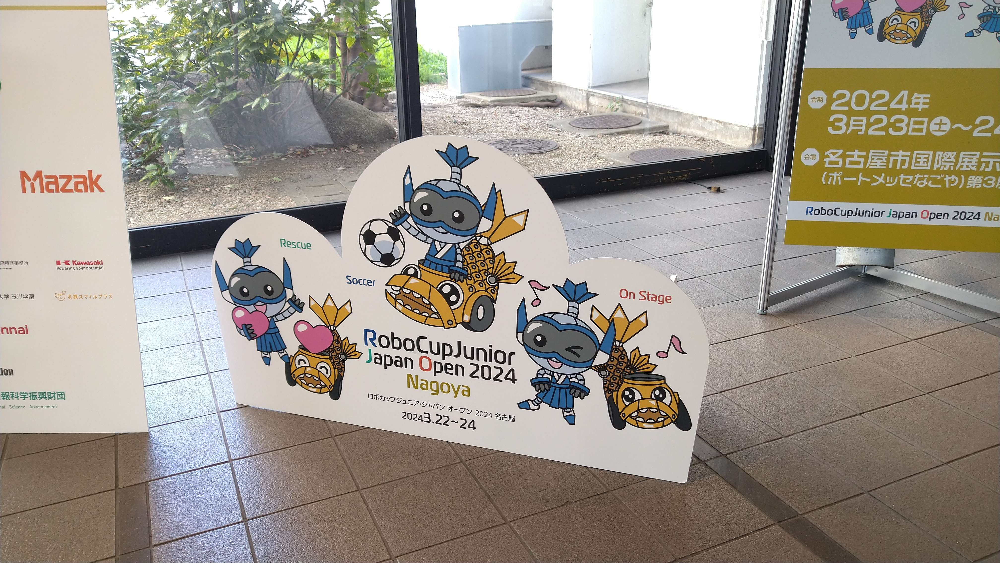

TOINIOT² Blog
今からでも間に合う!!全国大会のためにやっておきたいこと3選
2025-03-27 Writer: 010
こんにちは。今回はロボカップジュニアの全国大会(サッカー競技)について注意しておきたい点をまとめてみました。
なんと、本番を明日に控えた今からでもできることばかりです。全国に出れないチームが何を偉そうに…と思われるかもしれませんが、一応去年は出場しましたし、
何より今年の関西でラインセンサを燃やしたチームとして皆さんには同じ経験を絶対にしてほしくないので、反面教師的に読んでいただければ幸いです。


関西ブロック当日、第1試合の直前に燃えたラインセンサ。線の差し間違いによる過電圧が原因と思われる。
1. 睡眠は大事
この時期になるとオールで調整するチームが必ず現れます。かく言うIOT²も関西ブロックの時にほぼ徹夜で調整しました。
一応ある程度の動きはしていましたが、目標としていた優勝を勝ち取ろうと最後の最後まであがいていた感じですね。
ですが、睡眠不足になると自分が大丈夫だと思っていても自然と注意力が欠けていきます。すぐ近くで誰かに話しかけられても全然気づけなかったり…(実体験)
そして、気づかぬうちに線を差し間違えて…🔥まさにラインセンサが燃えた原因です。しかも誰もそのことを覚えていないのが恐ろしい。
例えるなら、睡眠不足のときに気づいたら寝てた💦を繰り返すやつです。本当に、マジで、気合ではどうにもならないんです。とはいえ、ロボットがうまく動かないとそうは言ってられないのも事実。
リスクを負ってでもまずは目の前の課題を解決しなければなりません。そこでおすすめしたいのが、「チームの中で1人は絶対に早く寝る」ということ。
翌日、バッテリー装着や一時的に解体した後の修繕など、ミスると取り返しのつかない作業はこの人がやるようにすると比較的安心です。
2. ショートした基板も無駄じゃない
大会中、必須になるのがロボットの予備部品。今まで壊れたことのないような部分が突如としてダメになるのが大会のあるあるです。
大前提として、もう1機余分に作れるくらいの予備はあったほうがいいです(ホントに作ったらルール違反ですが笑)。
ただ、時間の都合でもう間に合わない…そんなときは練習中に壊れてしまったり、機体の仕様が変わって「使わなくなった基板などをとりあえず持っていく」のがおすすめです。
たとえいらないと思っても(←ここ重要)。もちろんショートした部分は使えないでしょうが、それ以外の生きていている箇所を基板からとって活用したり、旧仕様のものでも緊急事態のときには空中配線なんかで応急処置くらいにはなります。
部品がなければそこで終わりですが、なにかあれば首の皮1枚だろうがつながります。実際、僕たちは関西で燃えたラインセンサの代わりに以前使用していた一部で動作不良が起きるセンサでその場をしのごうとしました。
しかし、なんと和歌山に置いてきてしまっていたのです()結局取りに帰ったのですが、数時間ほどの大幅な時間ロスとなりました。
3. 何かあっても冷静に
どれだけ万全に対策していたとしても、やはり大会中のトラブルはつきもの。重要なのはその後の対応です。ありきたりですが、まずは「深呼吸」。これけっこう大事。
落ち着け…!!と自分に思うのもいいですが、これたいていの場合落ち着けていないどころかさらに焦るので注意が必要です。
言葉ではわかっていてもいざやるとなるとなかなか難しい…しかし、さらなる悲劇を生まないためにもぜひ。
IOT²での事例だと、前述のラインセンサのトラブル対応で1試合目の開始時刻が迫っており、慌てて無事だったもう1機をコートに持っていこうとするのですが、あろうことかここで機体を落としてしまうんですよね。
さらに、その衝撃でハンドル(予備部品なし)が折れるという、、なんとかプラスチックスペーサーで補強出来ましたが、あのときの絶望感は凄かった…
今回は以上となります。全国大会に出場する選手の皆様、頑張ってください!!

ps.黒マステ、ちょっとしたところの固定や光源対策に超便利